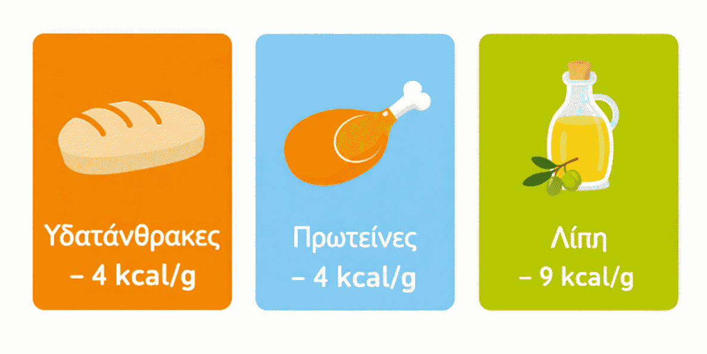
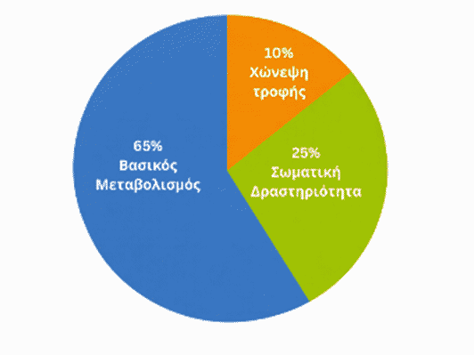
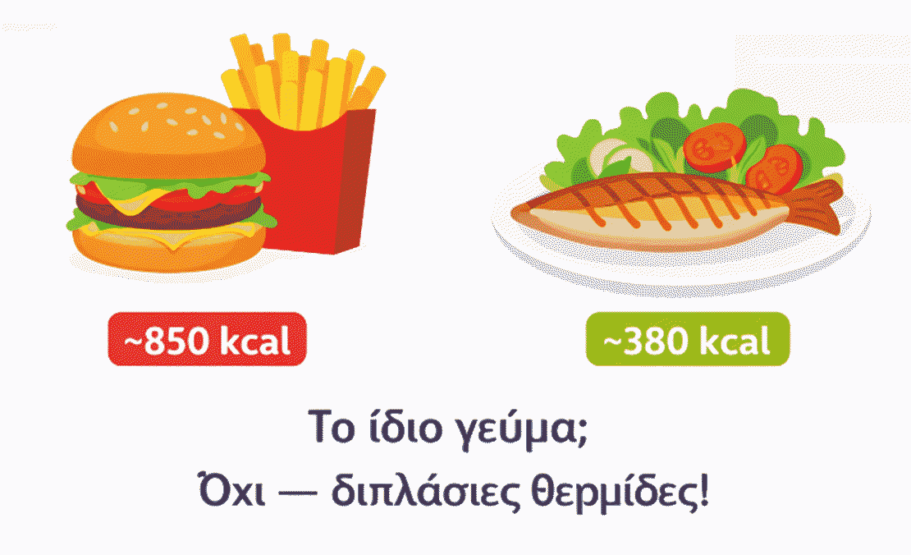
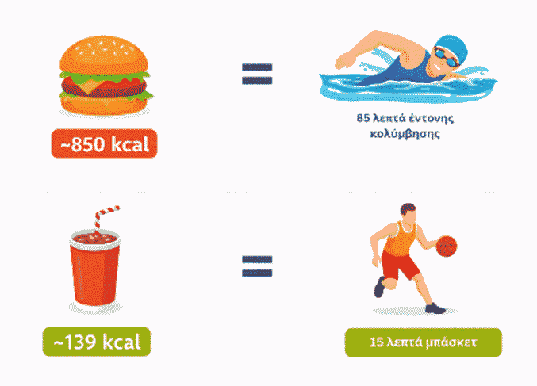
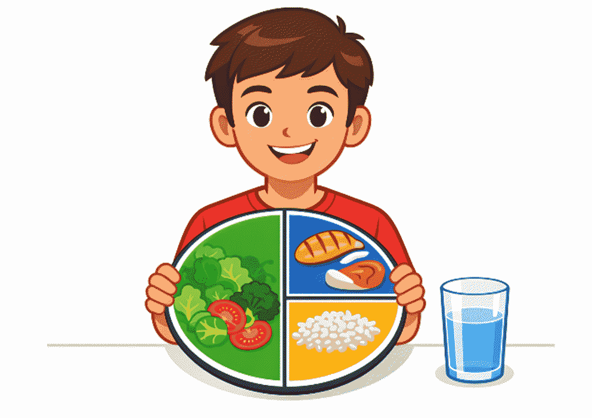

Εισαγωγή
Κάθε μέρα τρως, πίνεις και κινείσαι. Αυτές οι τρεις απλές πράξεις κρύβουν πίσω τους έναν αόρατο «υπολογισμό» που το σώμα σου κάνει αδιάκοπα: πόση ενέργεια παίρνεις από τις τροφές και πόση ενέργεια ξοδεύεις με τις δραστηριότητές σου. Όταν αυτή η ισορροπία διαταράσσεται για μεγάλο χρονικό διάστημα, το σωματικό σου βάρος αλλάζει.
Σε αυτό το μάθημα θα ανακαλύψεις τι είναι οι θερμίδες, πώς τις προσλαμβάνεις από τα τρόφιμα, πώς τις δαπανάς μέσα από την καθημερινή σου ζωή και το πιο εκπληκτικό πόση άσκηση χρειάζεται για να «κάψεις» αυτά που τρως.
Τι είναι οι Θερμίδες;
Definition / Ορισμός
Η θερμίδα (kcal) είναι η μονάδα μέτρησης της ενέργειας που περιέχεται στα τρόφιμα και που δαπανά ο οργανισμός κατά τη λειτουργία του. Στην καθημερινή ζωή, όταν λέμε «θερμίδα», εννοούμε στην πραγματικότητα «χιλιοθερμίδα» (kcal) δηλαδή την ποσότητα ενέργειας που χρειάζεται για να θερμανθεί 1 λίτρο νερού κατά 1°C.
Στις ετικέτες τροφίμων και στις διατροφικές οδηγίες, οι τιμές που βλέπεις αναφέρονται πάντα σε kcal (χιλιοθερμίδες).
Τι είναι «κενές θερμίδες»;
Μερικά τρόφιμα και ποτά (π.χ. αναψυκτικά, γλυκά, τσιπς) έχουν πολλές θερμίδες, αλλά ελάχιστα θρεπτικά συστατικά, καθώς δεν προσφέρουν βιταμίνες, μέταλλα ή φυτικές ίνες. Αυτές οι θερμίδες ονομάζονται «κενές θερμίδες» (empty calories). Το πρόβλημα δεν είναι μόνο το βάρος είναι ότι ταυτόχρονα στερείσαι θρεπτικά συστατικά που χρειάζεται ο οργανισμός σου για να αναπτυχθεί σωστά.
Από πού προέρχονται οι θερμίδες;
Τα τρόφιμα αποδίδουν ενέργεια μέσα από τρία μακροθρεπτικά συστατικά:
4 kcal/g
Κύρια πηγή άμεσης ενέργειας
4 kcal/g
Δομικά υλικά για τους μύες και τους ιστούς
9 kcal/g
Πυκνή πηγή ενέργειας και αποθήκευσης
Παρατήρησε ότι τα λίπη αποδίδουν διπλάσια και πλέον ενέργεια σε σχέση με τους υδατάνθρακες και τις πρωτεΐνες. Αυτός είναι ένας βασικός λόγος που τα λιπαρά τρόφιμα έχουν τόσο υψηλή θερμιδική αξία.

Ενεργειακή Ισορροπία
Η βασική αρχή
Η ενεργειακή ισορροπία είναι η σχέση μεταξύ της ενέργειας που προσλαμβάνεις (μέσω τροφής) και της ενέργειας που δαπανάς (μέσω βασικού μεταβολισμού και σωματικής δραστηριότητας):
Πού πηγαίνει η ενέργεια που προσλαμβάνεις;
Η ενέργεια που παίρνεις από το φαγητό κατανέμεται σε τρεις μεγάλες κατηγορίες δαπάνης:
Είναι η ενέργεια που χρειάζεται το σώμα σου απλώς για να λειτουργεί, να χτυπά η καρδιά, να αναπνέεις, να λειτουργεί ο εγκέφαλος, να ρυθμίζεται η θερμοκρασία σου. Ακόμα και αν ξαπλώσεις όλη μέρα, χωρίς να κουνηθείς, ο οργανισμός σου συνεχίζει να καίει θερμίδες.
Το ίδιο το φαγητό χρειάζεται ενέργεια για να χωνευτεί. Αντιπροσωπεύει περίπου 10% της ημερήσιας δαπάνης.
Κάθε κίνηση που κάνεις από το να σηκωθείς από την καρέκλα μέχρι να παίξεις ποδόσφαιρο καίει θερμίδες. Αυτό το μέρος είναι το πιο ελεγχόμενο από εσένα.

Πόσες θερμίδες χρειάζεσαι την ημέρα;
Οι ημερήσιες ενεργειακές ανάγκες εξαρτώνται από την ηλικία, το φύλο, το βάρος, το ύψος και το επίπεδο δραστηριότητας. Για έναν/μία έφηβο/η 12–15 ετών οι συστάσεις είναι κατά προσέγγιση:
| Επίπεδο Δραστηριότητας | Κορίτσια | Αγόρια |
|---|---|---|
| Καθιστική ζωή | ~1.800 kcal/ημέρα | ~2.000 kcal/ημέρα |
| Μέτρια δραστηριότητα | ~2.000 kcal/ημέρα | ~2.200 kcal/ημέρα |
| Έντονη δραστηριότητα | ~2.200 kcal/ημέρα | ~2.600 kcal/ημέρα |
Αυτές είναι εκτιμήσεις — κάθε άνθρωπος είναι διαφορετικός. Για ακριβή αξιολόγηση χρειάζεται ειδικός (διαιτολόγος ή γιατρός).
Θερμίδες στα Τρόφιμα: Υγιεινά vs Ανθυγιεινά Γεύματα
Τι κρύβεται στο πιάτο σου;
Παρακάτω βλέπεις τη θερμιδική αξία συνηθισμένων τροφίμων που ίσως καταναλώνεις καθημερινά. Μερικά από αυτά είναι υγιεινές επιλογές, άλλα λιγότερο. Πρόσεξε τη διαφορά.
| Τρόφιμο | Μερίδα | kcal (κατά προσέγγιση) | Χαρακτηρισμός |
|---|---|---|---|
| Burger με τυρί + πατάτες | 350 g | ~850 | ⚠️ Ανθυγιεινό |
| Πίτσα μαργαρίτα | 2 κομμάτια / 200 g | ~530 | ⚠️ Ανθυγιεινό |
| Χωριάτικο λουκάνικο (ψητό) | 100 g | ~320 | ⚠️ Ανθυγιεινό |
| Παγωτό βανίλιας | 120 g | ~280 | ⚠️ Με μέτρο |
| Πάστα σοκολάτας | 100 g | ~400 | ⚠️ Ανθυγιεινό |
| Αναψυκτικό (κόλα) | 330 ml | ~139 | ⚠️ Κενές θερμίδες |
| Ομελέτα 2 αβγών | 150 g | ~220 | ✅ Υγιεινό |
| Ψητό ψάρι (τσιπούρα) | 200 g | ~200 | ✅ Πολύ υγιεινό |
| Χωριάτικη σαλάτα | 300 g | ~180 | ✅ Πολύ υγιεινό |
| Μπανάνα | 1 μεγάλη / 150 g | ~135 | ✅ Υγιεινό |
Παρατήρησε ότι ένα burger με πατάτες έχει σχεδόν 5 φορές περισσότερες θερμίδες από μία χωριάτικη σαλάτα και σε πολύ μικρότερο όγκο!

Γιατί η ποιότητα της τροφής μετράει εξίσου με τις θερμίδες;
Δύο γεύματα με ίδιες θερμίδες μπορεί να είναι πολύ διαφορετικά στη θρεπτική τους αξία. Το ψητό ψάρι των 200 kcal σου δίνει υψηλής ποιότητας πρωτεΐνη, ωμέγα-3 λιπαρά οξέα και βιταμίνες. Ένα αναψυκτικό με παρόμοιες θερμίδες δεν σου δίνει τίποτα από αυτά. Ο οργανισμός σου χρειάζεται και τα δύο: ποσότητα ενέργειας και ποιότητα θρεπτικών συστατικών.
Θερμίδες και Σωματική Δραστηριότητα
Πόσες θερμίδες «καίει» η άσκηση;
Η ενέργεια που δαπανάς κατά την άσκηση εξαρτάται από: το είδος της δραστηριότητας (ένταση), τη διάρκεια (χρόνος) και το σωματικό βάρος (ένα βαρύτερο σώμα καίει περισσότερο για την ίδια κίνηση).
Οι παρακάτω τιμές αφορούν άτομο ~60 kg (κατά προσέγγιση, βάσει MET values):
| Αθλητική Δραστηριότητα | Διάρκεια | kcal (~60 kg άτομο) |
|---|---|---|
| Κολύμβηση (έντονη) | 85 λεπτά | ~850 |
| Τρέξιμο (~10 km/h) | 50 λεπτά | ~530 |
| Κολύμβηση (μέτρια) | 40 λεπτά | ~400 |
| Αερόβια γυμναστική | 40 λεπτά | ~320 |
| Ποδηλασία (μέτρια) | 25 λεπτά | ~220 |
| Βάρη (μέτρια ένταση) | 30 λεπτά | ~180 |
| Ποδόσφαιρο | 30 λεπτά | ~280 |
| Μπάσκετ | 15 λεπτά | ~139 |
| Άλμα σε σχοινάκι | 12 λεπτά | ~135 |
| Περπάτημα αργό | 30 λεπτά | ~85 |
Το «παράδοξο» της ενεργειακής ισορροπίας
Διάβασε προσεκτικά τα παρακάτω παραδείγματα είναι αποκαλυπτικά:
- Για να «ξοδέψεις» τις θερμίδες ενός burger με πατάτες (~850 kcal) χρειάζεσαι: Σχεδόν 1 ώρα και 25 λεπτά έντονης κολύμβησης ή Περίπου 1 ώρα και 20 λεπτά τρεξίματος.
- Για να «ξοδέψεις» τις θερμίδες ενός κουτιού αναψυκτικού (~139 kcal) χρειάζεσαι: Περίπου 15 λεπτά μπάσκετ ή Περίπου 50 λεπτά αργού περπατήματος.
Το βασικό συμπέρασμα: Χρειάζονται μόλις λεπτά για να καταναλώσεις τρόφιμα με πολλές θερμίδες, αλλά ώρες άσκησης για να τις αντισταθμίσεις. Αυτός είναι ο λόγος που η πρόληψη, δηλαδή η επιλογή, υγιεινών τροφίμων είναι σαφώς πιο αποτελεσματική από την προσπάθεια να «αποτοξινωθείς» με άσκηση.

Πρακτικές Συμβουλές για Υγιεινό Σωματικό Βάρος
Οδηγίες ΠΟΥ για Φυσική Δραστηριότητα
Σύμφωνα με τον Παγκόσμιο Οργανισμό Υγείας (ΠΟΥ, 2020), τα παιδιά και οι έφηβοι/ες ηλικίας 5–17 ετών πρέπει:
- Να κάνουν τουλάχιστον 60 λεπτά μέτριας έως έντονης σωματικής δραστηριότητας κάθε μέρα.
- Να περιλαμβάνουν ασκήσεις ενδυνάμωσης (π.χ. βάρη, calisthenics) τουλάχιστον 3 φορές την εβδομάδα.
- Να περιορίζουν τον καθιστικό χρόνο (οθόνες, καναπές).
Ισορροπημένο Πιάτο Διατροφής
Η σωστή κατανομή των τροφικών ομάδων σε κάθε κύριο γεύμα βοηθά στη λήψη όλων των απαραίτητων συστατικών.

Δέκα πρακτικές συμβουλές για εσένα
Ακολουθώντας τις παρακάτω συμβουλές μπορείς να διατηρείς εύκολα ένα υγιές σωματικό βάρος:
Ο Δείκτης Μάζας Σώματος (ΔΜΣ)
Τι είναι ο ΔΜΣ;
Ο Δείκτης Μάζας Σώματος (ΔΜΣ) είναι ένας απλός υπολογισμός που εκτιμά αν το σωματικό βάρος είναι αναλογικό με το ύψος:
Παράδειγμα
Αν ζυγίζεις 55 kg και έχεις ύψος 1,65 m:
ΔΜΣ = 55 ÷ (1,65 × 1,65) = 55 ÷ 2,72 ≈ 20,2
Ερμηνεία ΔΜΣ για Ενήλικες
| ΔΜΣ | Κατηγορία |
|---|---|
| Κάτω από 18,5 | Ελλιποβαρής |
| 18,5 – 24,9 | Φυσιολογικό βάρος |
| 25 – 29,9 | Υπέρβαρος |
| 30 και πάνω | Παχυσαρκία |
⚠️ Σημαντική σημείωση
Για παιδιά και εφήβου/ες ο ΔΜΣ ερμηνεύεται διαφορετικά συγκρίνεται με ειδικά εκατοστιαία τεταρτημόρια για ηλικία και φύλο. Ο ΔΜΣ δεν μετρά απευθείας το σωματικό λίπος και δεν λαμβάνει υπόψη τη μυϊκή μάζα. Πάντα συμβουλεύεσαι έναν/μία ειδικό για αξιολόγηση.
Σύνοψη όσων έμαθες
Ανακεφαλαίωση των βασικών σημείων του μαθήματος:
- Η θερμίδα (kcal) είναι η μονάδα ενέργειας στα τρόφιμα και στην άσκηση.
- Τα τρόφιμα αποδίδουν ενέργεια μέσω υδατανθράκων, πρωτεϊνών και λιπών. Τα λίπη έχουν τη μεγαλύτερη ενεργειακή πυκνότητα.
- Η ενεργειακή ισορροπία (πρόσληψη vs δαπάνη) καθορίζει αν το βάρος σου αυξάνεται, μειώνεται ή παραμένει σταθερό.
- Ο Βασικός Μεταβολικός Ρυθμός καταναλώνει τη μεγαλύτερη μερίδα ενέργειας ακόμα και σε ηρεμία.
- Οι θερμίδες προσλαμβάνονται εύκολα από ανθυγιεινά τρόφιμα, αλλά δαπανώνται δύσκολα μέσω άσκησης.
- Ο ΠΟΥ συστήνει 60 λεπτά μέτριας-έντονης δραστηριότητας κάθε μέρα για εφήβους/ες.
- Η καλύτερη στρατηγική για υγιές βάρος είναι ο συνδυασμός ισορροπημένης διατροφής και τακτικής άσκησης.